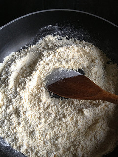

Monhinga
Ingredients
For the broth:
- 5 tbsp gram flour
- 2 tbsp rice flour
- 2 tins of mackerel in brine (~200g)
- 1 tin of sardines in oil (~100g)
- 500ml vegetable or fish stock
- 2 large onions, quartered
- Handful of shredded banana blossom (see NOTE below)
- 1 tbsp fish sauce (known in Burmese as ngan-bya-yay)
For the spice paste:
- 4 cloves garlic, peeled
- 3cm knob of fresh root ginger, peeled
- 2 lemongrass stalks, trimmed of woody bits
- 1 small bunch of fresh coriander, stems only
- 6 tbsp groundnut or other neutral oil
- 1 tbsp mild chilli powder
- 1 tbsp ground turmeric
- 1 tsp hot paprika
- 1 tsp freshly ground black pepper
To serve:
- 600g dried rice vermicelli noodles
- 200g ready-made fishcake, sliced (available from Oriental/Asian supermarkets)
- Wedges of hard-boiled eggs
- 1 small bunch of fresh coriander leaves, chopped
- Fried shallots
- Lime wedges
- Fish sauce
- Chilli oil
- Yellow split pea crackers (be-gyun kyaw) (recipe to follow)
- Crispy garlic oil (recipe to follow)
Instructiion
- Toast the gram flour and rice flour by tossing in a dry frying-pan on a medium-high heat for 5-6 minutes till fragrant. Watch like a hawk and keep moving the pan, since it can catch and turn black in seconds. Leave to cool and then sieve the toasted flours.
- Whisk the sieved flours with 500ml water in a bowl or jug till smooth. Set this flour solution to one side.

- Now make the spice paste - blitz the garlic, ginger, lemongrass and coriander stems in a blender or food processor until it forms a purée.
- Heat the oil in a stockpot on medium-high and add the purée and the rest of the spices. Fry for 3-4 minutes till fragrant.
- Now add the fish as well as the oil and brine from the tins to the stockpot and mash them with a masher or a fork till smooth.
- Stir to combine with the spice paste and then add the flour solution you made earlier as well as the stock.
- Bring to the boil, turn the heat down to medium and simmer vigorously for 30 minutes.
- Now add the quartered onions, the banana blossom if using and 2 litres of water, turn the heat down to medium-low and simmer for 2 more hours, stirring from time to time.
- Meanwhile, put the noodles into a heatproof bowl, generously cover with just-boiled water, untangle with a fork and then leave to soak for 15 minutes. Drain the noodles into a colander and rinse them thoroughly with cold running water.
- Leave the colander in the sink to allow any residual water to keep draining. The Burmese don't like mushy or starchy noodles and this process gives the best result.
- Just before you're ready to serve, heat 2 tablespoons oil in a frying-pan on medium, add the fishcake and fry for 5 minutes till golden. Set to one side.
- When you're ready to serve, stir the fish sauce into the stockpot of broth.
- Now divide the noodles amongst pasta plates (should be about a handful in each), and ladle the hot soup on top (which will reheat the noodles).
- Garnish each dish with fishcake, chunks of split pea cracker, egg and coriander leaves and serve with lime wedges, fish sauce and chilli and garlic oil on the side.
- As for utensils, ideally you should use metal Chinese spoons as you can see in all the photos and the video. We actually call them mohinga zun which means "mohinga spoons" in Burmese.
- Failing that, use tablespoons, but never ever ever eat mohinga with chopsticks - it's the heinous equivalent of heating gazpacho ...